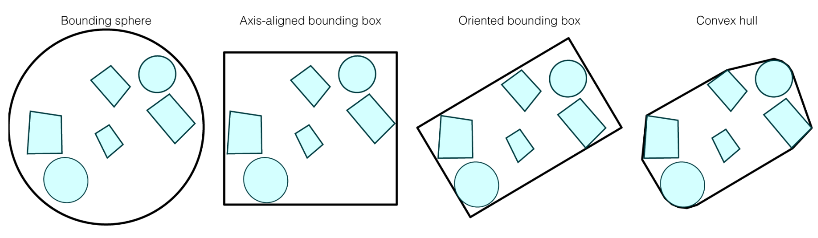

Object partitioning schemes are to bound objects into a big collection (box, sphere, convex hull) so that we can quickly query the data structure. The space can be shared within multiple bounding.
Space partitioning schemes are to divide the space into subspaces.

Consider a 2D example, an AABB is defined by 4 lines
$$x = x_{min}, x = x_{max}, y=y_{min}, y=y_{max}$$
where the point is within the bounding box if
$$(x, y) \in [x_{min}, x_{max}]\times[y_{min}, y_{max}]$$
Easy to build, but waste a lot of areas
For a group of objects $A_1,...,A_n$, let the $$c = \sum_{i=1}^n \frac{A_i}{n}, r = \max\{\|A_i - c\|\}$$ However, note that intersecting with a sphere involves solving a quadratic equation hence more computations. Also, it wastes a lot of areas
For a group of objects $A_1,..., A_n$, do PCA so that we can take the first 2 largest principal components, and make it our axis.
Little area wasted, but computations for interactions and constructions
No area wasted, but takes much computations for constructing such trees.
for a ray $e+td$, it can intersect with the 4 lines as $$t_{xmin}=(x_{min} - x_e)/x_d, t_{xmax}=(x_{max} - x_e)/x_d$$ $$t_{ymin}=(y_{min} - y_e)/x_d, t_{ymax}=(y_{max} - y_e)/x_d$$ and an intersection happens if $$[t_{xmin}, t_{xmax}]\cap [t_{ymin}, t_{ymax}]\neq \emptyset\Rightarrow \exists t > 0. e+td \in [x_{min}, x_{max}]\times[y_{min}, y_{max}]$$
For the actual implementation, notice that if $d_x < 0$, then $t_{xmin} < t_{xmax}$ so that we need one if check.
Also, note that $d_x=0$ will lead to divide by 0 error and $t_{xmin}=t_{xmax} = \infty$, so we use $a_x = d_x^{-1}$ to handle such case so that for each coordinate we check
a = 1 / x_d
if a >= 0:
t_xmin = a * (x_min - x_e)
t_xmax = a * (x_max - x_e)
else:
t_xmax = a * (x_min - x_e)
t_xmin = a * (x_max - x_e)
abc = np.array([0, .4, .2])
ghi = np.array([0, .5, .2])
abc.dot(np.cross(abc, ghi))
import numpy as np
import matplotlib.pyplot as plt
class Triangle(Object):
def __init__(self, corners):
""" corners is a 3 * 3 list of list
each row is a corner
"""
self.corners = np.array(corners)
def intersect(self, ray_d, ray_e, min_t, max_t):
abc = self.corners[0] - self.corners[1]
def_ = self.corners[0] - self.corners[2]
ghi = ray_d
jkl = self.corners[0] - ray_e
M = abc.dot(np.cross(def_, ghi))
time = - def_.dot(np.cross(abc, jkl)) / M
if time < min_t or time > max_t:
return - np.inf
gamma = ghi.dot(np.cross(abc, jkl)) / M
if gamma < 0 or gamma > 1:
return - np.inf
beta = jkl.dot(np.cross(def_, ghi)) / M
if beta < 0 or beta > 1:
return - np.inf
if beta + gamma > 1:
return - np.inf
return time
class BoundingBox:
def __init__(self):
self.min_corner = -np.array(np.inf, np.inf, np.inf)
self.max_corner = np.array(np.inf, np.inf, np.inf)
def __init__(self, min_corner, max_corner):
self.min_corner = np.array(min_corner)
self.max_corner = np.array(max_corner)
def intersect(self, ray_d, ray_e, min_t, max_t):
a = 1 / ray_d
diff_min = self.min_corner - ray_e
diff_max = self.max_corner - ray_e
t_xmin = a[0] * diff_min[0] if a[0] >= 0 else a[0] * diff_max[0]
t_xmax = a[0] * diff_max[0] if a[0] >= 0 else a[0] * diff_min[0]
t_ymin = a[1] * diff_min[1] if a[1] >= 0 else a[1] * diff_max[1]
t_ymax = a[1] * diff_max[1] if a[1] >= 0 else a[1] * diff_min[1]
t_zmin = a[2] * diff_min[2] if a[2] >= 0 else a[2] * diff_max[2]
t_zmax = a[2] * diff_max[2] if a[2] >= 0 else a[2] * diff_min[2]
if t_xminn > t_ymax or t_ymin> t_xmax \
or t_xmin > t_zmax or t_zmin > t_xmax \
or t_zmin > t_ymax or t_ymin > t_zmax:
return False
return t_max > max(t_xmax, t_ymax, t_zmax) \
and t_min < max(t_xmin, t_ymin, t_zmin)
def insert(self, obj):
if isinstance(obj, BoundingBox):
self.min_corner = np.min(np.vstack((self.min_corner, obj.min_corner)), axis=0)
self.max_corner = np.max(np.vstack((self.max_corner, obj.max_corner)), axis=0)
if isinstance(obj, Triangle):
self.min_corner = np.min(np.concatenate((self.min_corner[np.newaxis, :],
obj.corners), axis=0),
axis=0)
self.max_corner = np.max(np.concatenate((self.max_corner[np.newaxis, :],
obj.corners), axis=0),
axis=0)
def center(self):
return (self.min_corner + self.max_corner) / 2
An AABB tree is constructed recursively, at each level, it is the bounding box that encloses all the item, and it further divide into subtrees, each subtree will have a smaller bounding box.
AABB tree will have bounding box overlapping.
class AABBTree:
""" An AABB Tree
box: (BoundingBox) the bounding box that contains all the items
left: (AABBTree) the left subtree
right: (AABBTree) the right subtree
"""
self.box = None
self.left = None
self.right = None
def __init__(self, objs):
# base case, if this is the leaf node
if len(objs) == 1:
self.box = obj
return
# insert all objects into the top level bounding box
self.box = BoundingBox()
for obj in objs:
self.box.insert(obj)
# determine the axis split
axis = np.argmax(self.box.max_corner - self.box.min_corner)
left, right = [], []
for obj in objs:
if obj.center()[axis] < self.center()[axis]:
left.append(obj)
else:
right.append(obj)
# do a random split if all items are in one side
if (len(left) == 0) != (len(right) == 0):
left, right = [], []
curr = 0
for obj in objs:
if curr % 2 == 1:
left.append(obj)
else:
right.append(obj)
curr += 1
# recursively build the subtrees
if len(left) > 0:
self.left = AABBTree(left)
if len(right) > 0:
self.right = AABBTree(right)
def intersect(self, ray_d, ray_e, min_t):
# base case 1: if this is the leaf
if isinstance(self.box, Triangle):
return self.box.intersect(ray_d, ray_e, min_t)
# base case 2: if this is not the leaf
if isinstance(self.box, BoundingBox) and not self.box.intersect(ray_d, ray_e, min_t):
return -np.inf
# recursive call
if self.left is not None:
t_left = self.left.intersect(ray_d, ray_e, min_t, max_t)
if self.right is not None:
t_right = self.right.intersect(ray_d, ray_e, min_t, max_t)
if t_left > - np.inf and t_right > - np.inf:
return min(t_left, t_right)
else:
return max(t_left, t_right)
class Point:
def __init__(self, p):
self.p = np.array(p)
def distance(self, q):
return np.sum((p - q) ** 2)
class PriorityQueue:
""" A poor priority queue implementation
"""
def __init__(self):
self.items = []
self.priorities = []
def append(self, priority, item):
self.items.append(item)
self.priorities.append(priority)
def __len__(self):
return len(self.items)
def dequeue(self):
max_p = max(self.priorities)
for i in range(len(self.items)):
if self.priorities[i] == max_p:
return self.priorities.pop(i), self.items.pop(i)
def point_box_sqrd(q, box):
""" Measures the squared distance between
a query point p and a bounding box
"""
d = np.max(np.vstack((box.min_corner - q, q - box.max_corner)), axis=0)
return np.sum(d * d)
def point_AABBTree_sqrd(q, root):
""" Measures the squared distance between
a query point p and an AABBTree
"""
pq = PriorityQueue()
# bfs
pq.append(point_box_sqrd(q, root.box), root)
sqrd = max_sqrd + 1
while len(pq) > 0:
curr_prio, curr_item = pq.dequeue()
if curr_prio < sqrd:
# if is a leaf
if isinstance(curr_item.box, Point):
new_sqrd = curr_item.box.distance(q)
sqrd = new_sqrd if new_sqrd < sqrd else sqrd
else:
if curr_item.left is not None:
pq.append(point_box_sqrd(q, curr_item.left.box), curr_item.left)
if curr_item.right is not None:
pq.append(point_box_sqrd(q, curr_item.right.box), curr_item.right)
return sqrd